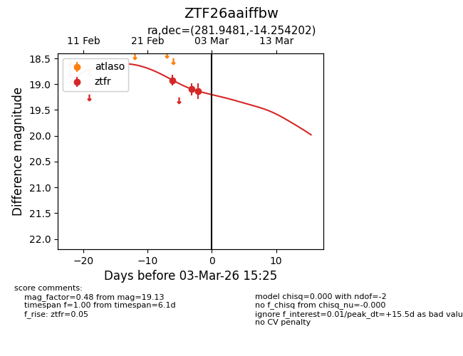
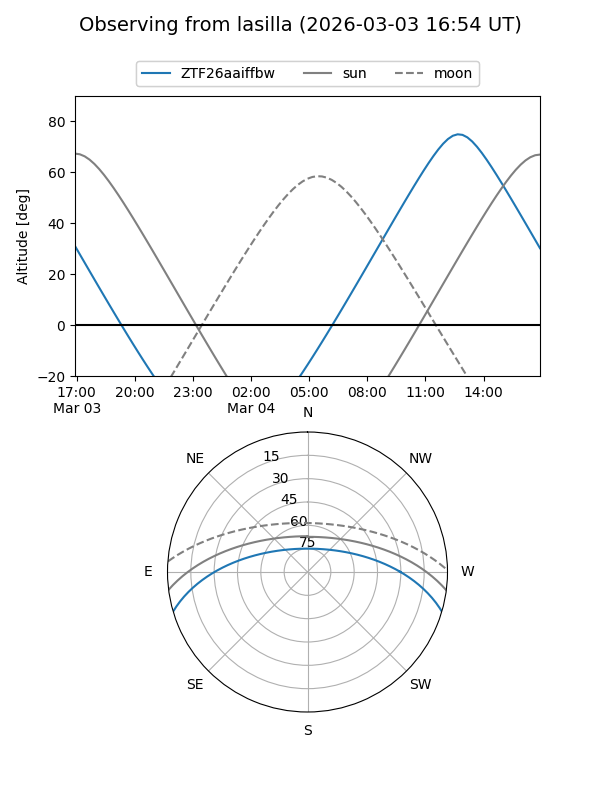
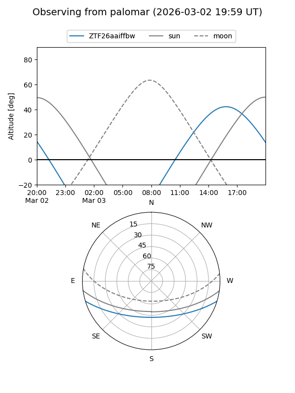
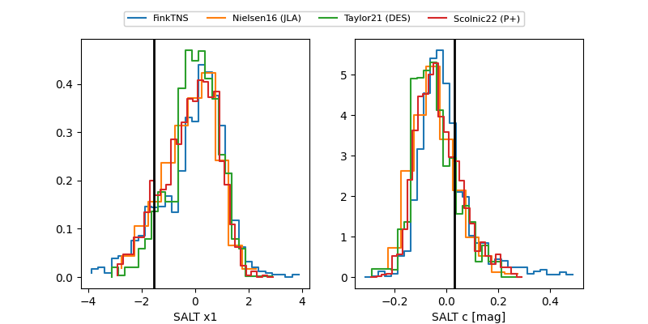

ZTF26aaiffbw
Target ZTF26aaiffbw at 2026-03-03 15:27
Aliases and brokers:
FINK: link
Lasair: link
ALeRCE: link
alt names
ZTF26aaiffbw (ztf,fink_ztf)
Coordinates:
equatorial (ra, dec) = 281.9481,-14.25420
equatorial (HMS+DMS) = 18:47:47.55,-14:15:15.13
galactic (l, b) = (19.7954,-5.65595)
Flags:
Photometry:
last ztfr=19.13
3 ztfr detections
Lightcurve

Visibility


Additional plots
